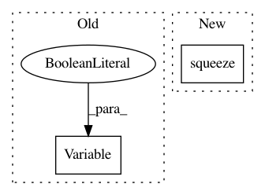

614c41e7f05d274991d95271c49a87af3fa2cf49,onmt/Loss.py,NMTLossCompute,compute_loss,#NMTLossCompute#Any#Any#Any#,150
Before Change
if self.label_smoothing > 0:
mask = target_feed.unsqueeze(1).eq(self.padding_idx) \
.repeat(1, scores.size(1))
target_ = Variable(self.one_hot.repeat(target_feed.size(0), 1),
requires_grad=False)
target_.scatter_(1, target_feed.unsqueeze(1),
1 - self.label_smoothing)
target_.masked_fill_(mask, 0)
target_feed = target_
After Change
gtruth = target.view(-1)
if self.confidence < 1:
tdata = gtruth.data
mask = torch.nonzero(tdata.eq(self.padding_idx)).squeeze()
likelihood = torch.gather(scores.data, 1, tdata.unsqueeze(1))
tmp_ = self.one_hot.repeat(gtruth.size(0), 1)
tmp_.scatter_(1, tdata.unsqueeze(1), self.confidence)
if mask.dim() > 0:
In pattern: SUPERPATTERN
Frequency: 3
Non-data size: 2
Instances
Project Name: OpenNMT/OpenNMT-py
Commit Name: 614c41e7f05d274991d95271c49a87af3fa2cf49
Time: 2017-12-22
Author: skywalker@postech.edu
File Name: onmt/Loss.py
Class Name: NMTLossCompute
Method Name: compute_loss
Project Name: OpenNMT/OpenNMT-py
Commit Name: d5a75ba09ae0595ca284fd806475eb8d3f771387
Time: 2017-01-17
Author: adam.paszke@gmail.com
File Name: word_language_model/generate.py
Class Name:
Method Name:
Project Name: deepmipt/DeepPavlov
Commit Name: b558468a95e64ee2a0d154eedc0f6bc1d9b26862
Time: 2018-02-06
Author: mary.vikhreva@gmail.com
File Name: deeppavlov/skills/go_bot/network.py
Class Name: GoalOrientedBotNetwork
Method Name: _build_graph